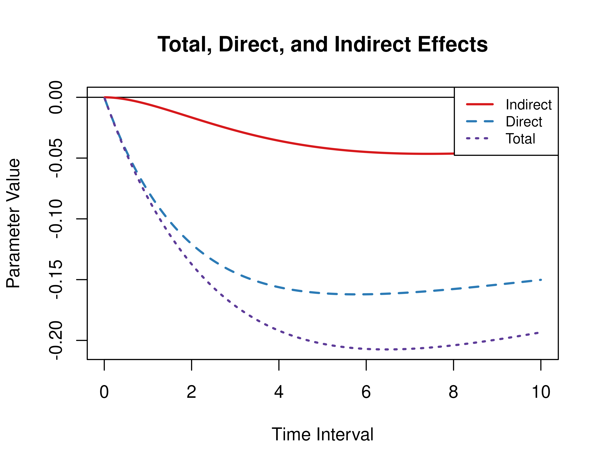

Illustrative Example 1 - Direct, Indirect, and Total Effects
Ivan Jacob Agaloos Pesigan
Source:vignettes/fig-example-1.Rmd
fig-example-1.RmdThis vignette accompanies Illustrative Example 1. The goal of the
example is to calculate the direct, indirect, and total effects from the
continuous-time vector autoregressive model drift matrix
for a specific time interval or a range of time intervals. This example
features the Med and MedStd functions from the
cTMed package.
Continuous-Time Vector Autoregressive Model Estimates
The object fit contains the fitted dynr
model for the data set with a sample size of 133. See Fitting
the Continuous-Time Vector Autoregressive Model for more
details.
Extract Elements of the Drift Matrix and the Process Noise Covariance Matrix
We extract the elements of the drift matrix and the process noise
covariance matrix from the fit object.
# drift matrix
phi <- matrix(
data = coef(fit)[
c(
"phi_11",
"phi_21",
"phi_31",
"phi_12",
"phi_22",
"phi_32",
"phi_13",
"phi_23",
"phi_33"
)
],
nrow = 3
)
# column names and row names are needed to define the indirect effects
colnames(phi) <- rownames(phi) <- c(
"conflict",
"knowledge",
"competence"
)Direct, Indirect, and Total Effects of a Time Interval of Three
Using the Med function from the cTMed
package, the direct, indirect, and total effects for a time interval of
three are given below.
Med(
phi = phi,
from = "conflict",
to = "competence",
med = "knowledge",
delta_t = 3
)
#>
#> Total, Direct, and Indirect Effects
#>
#> interval total direct indirect
#> [1,] 3 -0.1716 -0.1443 -0.0273Direct, Indirect, and Total Effects of a Time Interval of Zero to Ten
Using the Med function from the cTMed
package, the direct, indirect, and total effects for a range of time
interval values from 0 to 10 are plotted below.
med <- Med(
phi = phi,
from = "conflict",
to = "competence",
med = "knowledge",
delta_t = seq(from = 0, to = 10, length.out = 1000)
)
plot(med)
Standardized Direct, Indirect, and Total Effects of a Time Interval of Three
Using the MedStd function from the cTMed
package, the standardized direct, indirect, and total effects for a time
interval of three are given below.
MedStd(
phi = phi,
sigma = sigma,
from = "conflict",
to = "competence",
med = "knowledge",
delta_t = 1
)
#>
#> Total, Direct, and Indirect Effects
#>
#> interval total direct indirect
#> [1,] 1 -0.0956 -0.089 -0.0066